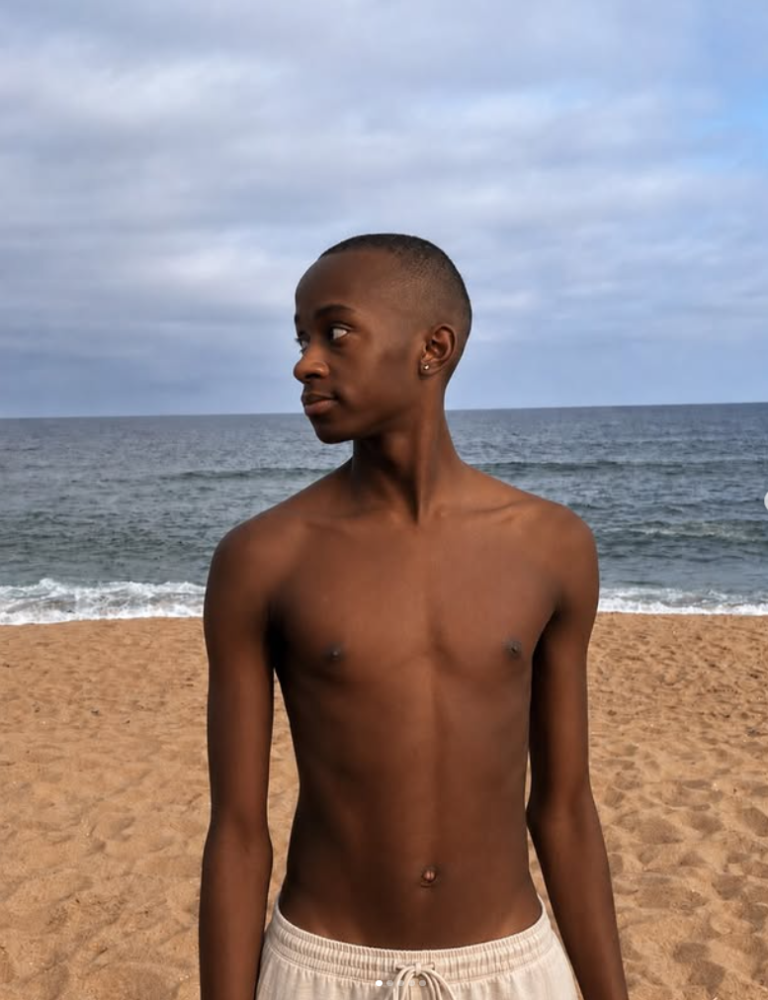
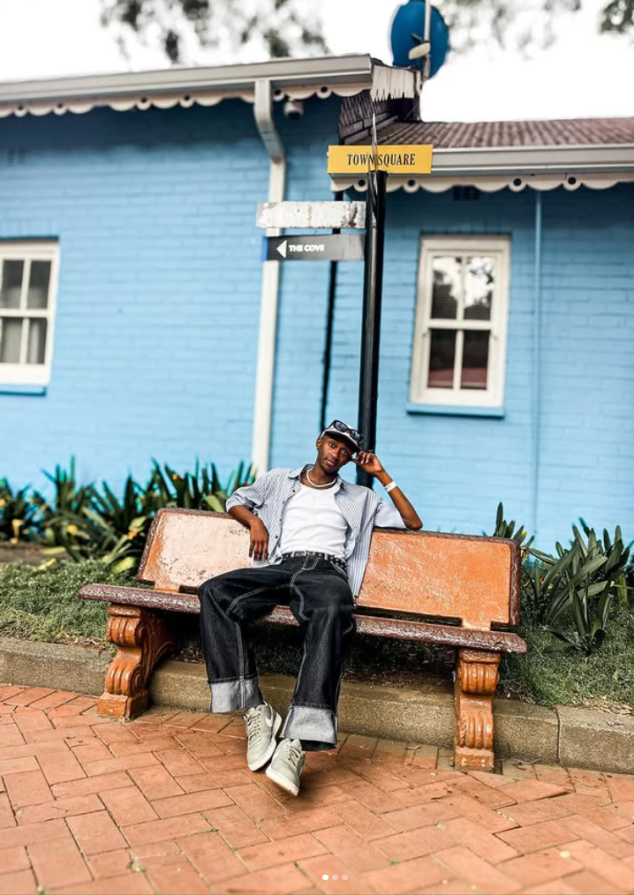
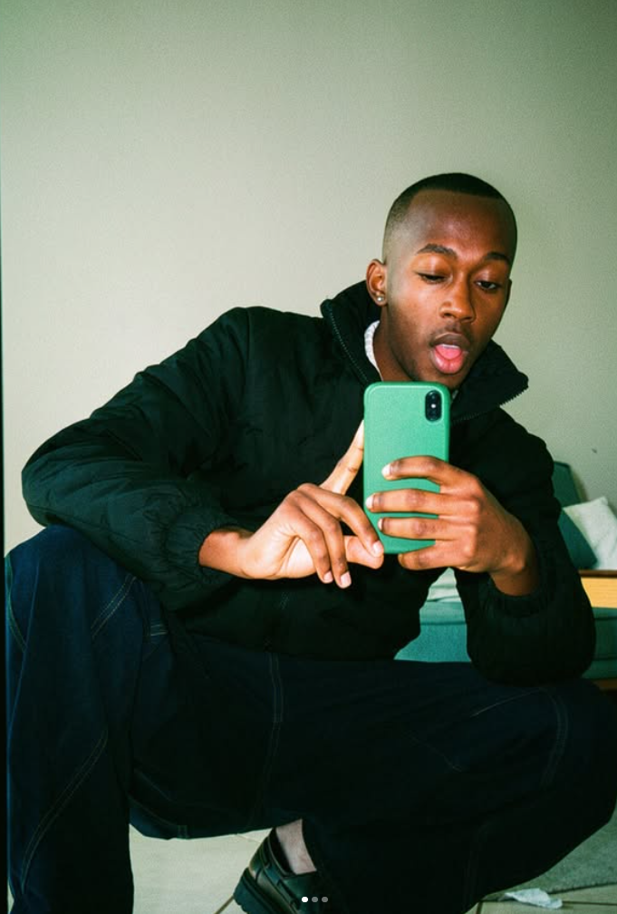
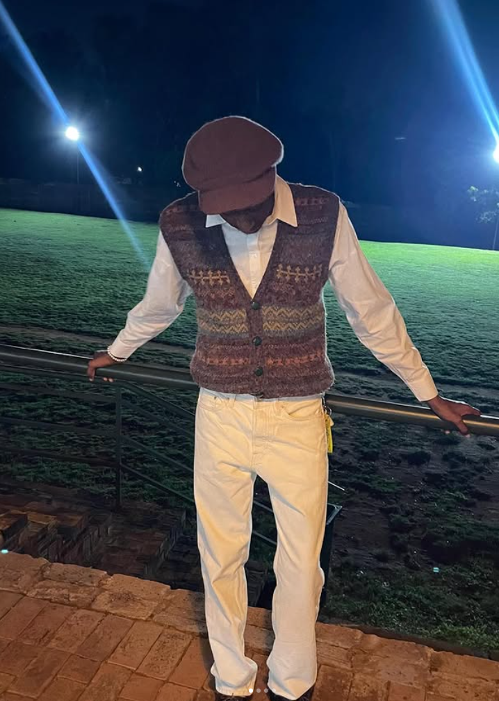
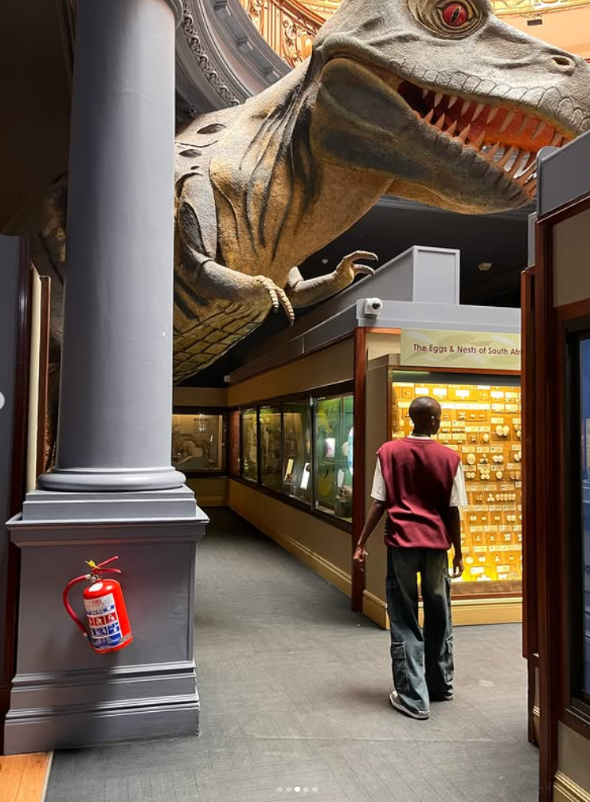
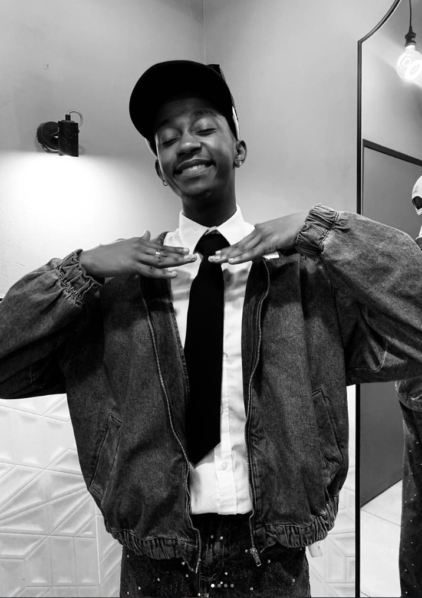
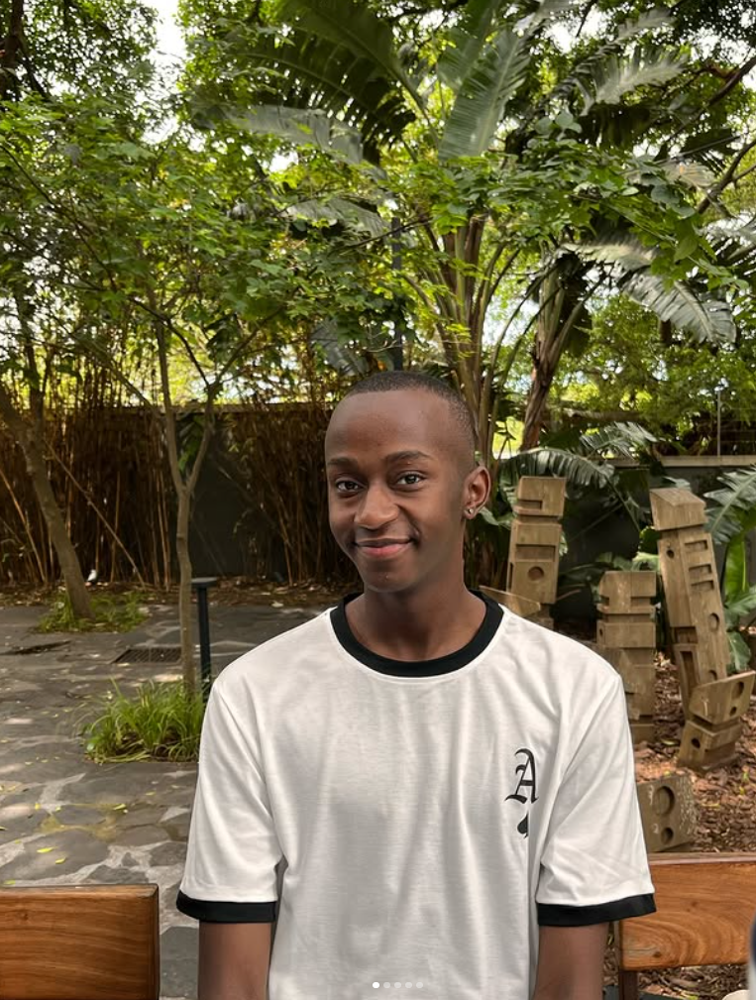

AVAILABLE FOR SELECT COLLABORATIONS
South Africa · Digital Creator
Make the
ordinary
feel iconic.
Fashion, lifestyle, personal style and UGC — created with a refined visual language, an editorial eye and a little bit of attitude.
Scroll to explore

J/N01 — 06
Personal style · Coastal study / 2026
FASHION✦LIFESTYLE✦UGC✦PERSONAL STYLE✦GROOMING✦TRAVEL✦FASHION✦LIFESTYLE✦UGC✦PERSONAL STYLE✦GROOMING✦TRAVEL✦
01 / ABOUT
A point of viewHi, I'm
Hi, I'm
Nathi.
J / N
I'm a South African digital creator passionate about fashion, lifestyle, personal style and visually engaging content.
My content captures everyday moments through a stylish, authentic lens — from outfits and grooming to travel, lifestyle finds and the small details that make a moment feel like yours. I create in a way that gives brands room to show up naturally, never like an interruption.
I'm currently open to PR, gifted collaborations, UGC, influencer partnerships and future paid campaigns.
02 / PERFORMANCE
The numbersSmall audience.
Small audience.
Serious reach.
Follower count is only part of the story. The stronger signal is repeated organic reach — with multiple pieces of TikTok content breaking well beyond my immediate audience.
Instagram
1.2K followers · 30.2% of recent views from non-followers
TikTok1.2K followers · multiple posts over 20K+ reach
03 / SELECTED WORK
A visual portfolioQuiet luxury.
Quiet luxury.
Visible taste.
Portraits, styling, travel, product-minded details and lifestyle frames — content that can live naturally on a feed, in a campaign or on a brand's own channels.






04 / WHAT I DO
Built for brandsCreative
Creative
partnerships.
The best brand work doesn't feel forced. It feels like a natural extension of the creator.
PR & Gifted Collaborations
Natural product integration designed to feel like part of the story, not an ad break.
Sponsored Content
Instagram and TikTok content shaped around a brief while keeping the creator voice intact.
UGC Content
Short-form videos, product photography, demos, unboxings and lifestyle assets for brand-owned channels.
Fashion & Lifestyle Campaigns
Styling, visual direction and story-led frames for launches, collections and seasonal moments.
A good fit looks effortlessLet's make something
Let's make something
worth stopping for.
Tell me what you're launching, where you want it to live and what you're hoping the audience feels.
Start a conversation ↗J/N — creator / 2026
05 / CONTACT
Work / PR / UGCHave a brief?
Have a brief?
Send it over.
For collaborations, UGC requests, PR opportunities and campaign enquiries, reach me here:
YOUR-CREATOR-EMAIL@example.com ↗